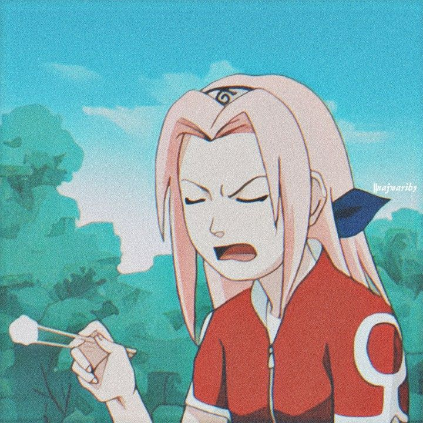
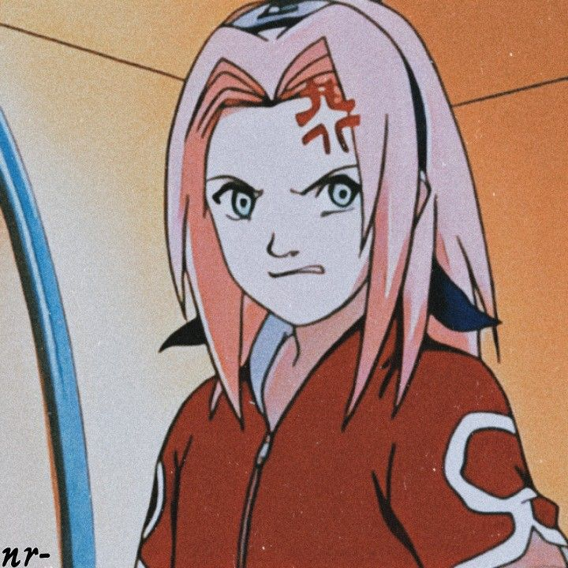
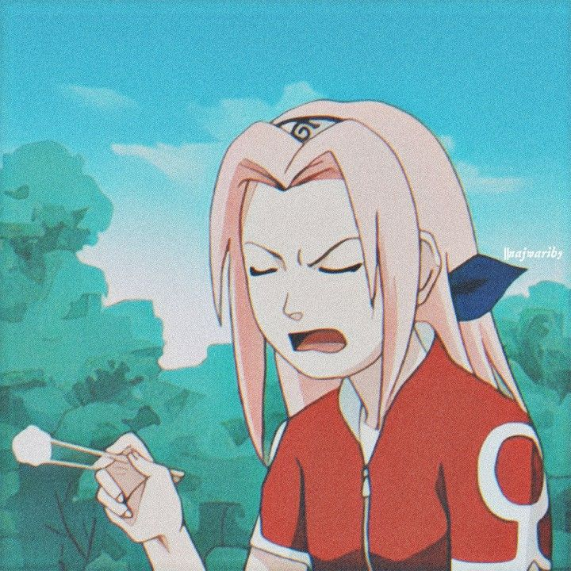
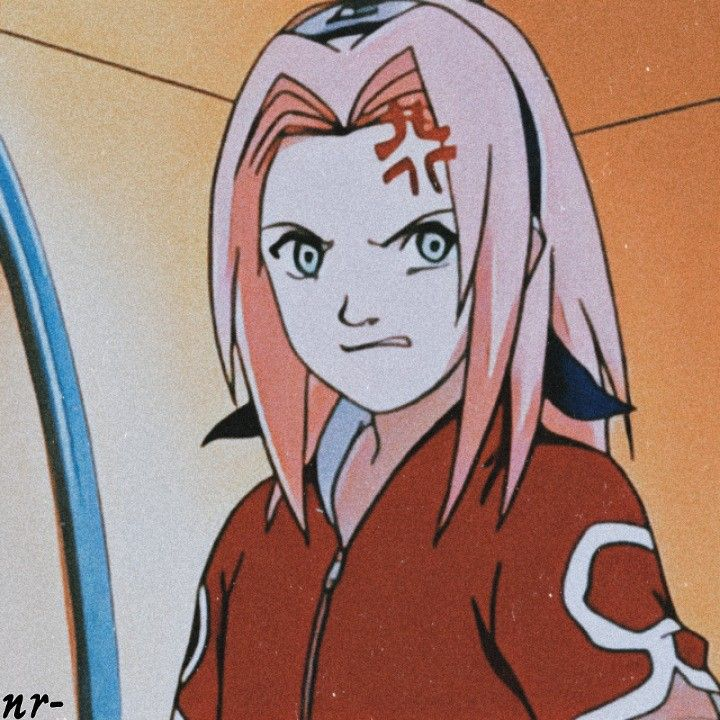
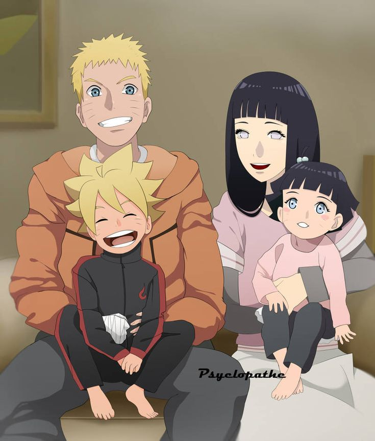

As a proud weeb and or Otaku, I thought to myself "why not show the world my love for anime? Because we surely don't have enough of those people in the world. anyway, this is my page and these are some of my favourite anime characters. Just to set the record straight, I am not going to be telling you guys stuff about them I'm just going to tell you all why I love them.
First and most importantly, my all time favourite;NARUTO
 



here are the reasons I love Naruto
- First but not most importantly, he's a hotcake i mean look at that first picture
- He is definetly determined and strong willed in whatever he's doing
- He is caring and very nice to most people around him
- He's nice to kids, come on that's husband material
- Always ready to learn new skills
- Always ready to become stronger. He just never gives up.

naruto with his family